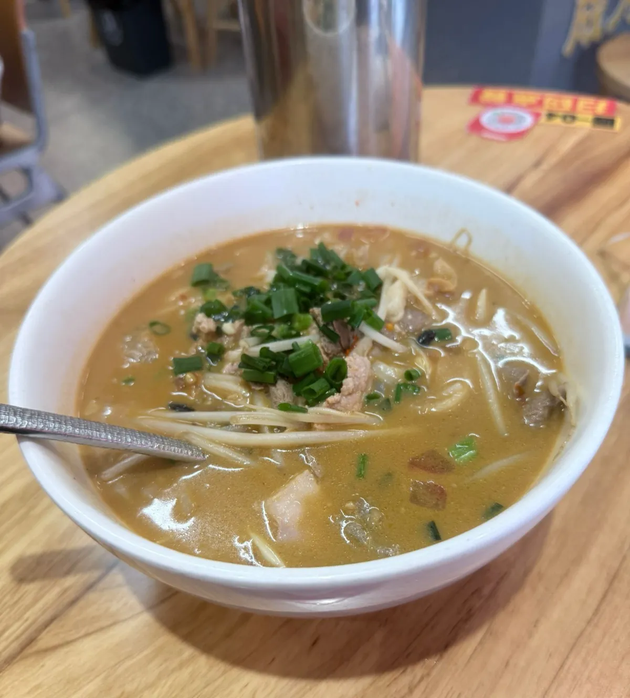

小越山南寧老友粉（西麗店）：食得辣都要一支豆奶頂住
深圳南山西麗，地鐵站行百幾米就到嘅一間南寧老友粉。我叫咗招牌三鮮老友粉，連一支豆奶，支付紀錄上面係 ¥23.00 ＝ HK$27.03，自費，冇任何招待。一句總結：夠地道，抵食，但落單嗰陣冇人會提你最要緊嗰件事——嗰支豆奶唔係配菜，係必需品。另外呢篇順手擺低四個價錢數字，而冇一個係「你會俾幾多」。
⚠️ 食唔到辣嘅唔好叫。唔係客套話。我自認食得辣，呢碗都食到滿頭大汗——而且辣唔係一入口就到，係慢慢滲出嚟。頭幾啖你會覺得「呢個叫辣咩」，然後由食到一半開始追上嚟，食完成個頭係濕嘅。要試就照試，但預咗要有嘢頂住。
價錢同出品呢啲嘢會變，所以佢哋抽咗出嚟獨立標明到訪日期 —— 實食紀錄呢個分區嘅硬規則之一。正文只留唔會變嗰部分。
一支冰豆奶唔係配菜，係必需品
呢個係本篇最實用嗰句，所以擺最前。

老友粉個辣同好多辣嘢唔同：佢唔係前置嘅，係後發嘅。一啖落去先到嘅係酸——酸筍嗰陣濃郁到有少少衝嘅酸味，跟住係豆豉香。辣要行多幾啖先開始出現，而且係累積嘅：唔會有邊一啖突然爆，係每一啖都加少少，加到你發覺自己額頭已經濕晒。
結果就係：你判斷「我食唔食得住」嗰個時機，一定係太早。頭三啖冇事，唔代表成碗冇事。等你發覺頂唔順，碗已經食咗一半，而一半嘅老友粉係唔會有人幫你食埋。
所以嗰支豆奶。我食完即刻灌咗成支落去先頂得順——唔係為咗好味，係為咗救火。豆奶嘅蛋白同脂肪食得住辣椒素，凍嘅仲快。你如果係叫套餐，飲品部分唔好揀汽水或者茶：兩樣都解唔到，汽水嘅氣仲會令你更加辛苦。
呢件事落單嗰陣係冇人會同你講嘅。菜單唔會標辣度，平台上面亦冇一個欄位叫「後勁」。所以擺喺呢篇最前面：叫老友粉，同時叫一支凍豆奶，當佢係碗嘅一部分。
四個數，冇一個係「你會俾幾多」
呢間店嘅價錢，喺唔同地方會見到四個唔同嘅數。四個都係真數字，四個嘅意思都唔同。
四個價，擺埋一齊睇
我實付：
平台掛住嘅優惠價：
平台菜品標價：
平台人均：
先由最當眼嗰個講起。平台商戶卡掛住「【隨心配】老友粉單人餐 ¥19.9 熱賣」，係成版最大嗰個價。我嗰次冇用到呢個優惠——收據上面係 ¥23.00，即係菜品標價。呢個唔係咩懸案，係最常見嗰種情況：時段優惠掛咗出嚟，唔等於自動落喺你張單度。
剩返嗰三個數，逐個講佢答緊咩問題：
- ¥19.9（平台時段優惠價）——答嘅係「呢間店最平可以幾平」，唔係「你今日會俾幾多」。佢係一個條件價：比菜品標價平大約 13%，但呢 13% 要你落單嗰陣自己確認攞唔攞到，唔係企埋去就自動有。我嗰次就冇攞到。
- ¥23（平台菜品標價）——答嘅係「呢一碗掛出嚟賣幾錢」。呢個唔係我俾嘅價，佢係平台菜品頁上面嘅一個標價；我實付嗰 ¥23.00 啱啱好同佢一樣，但兩者係兩件事，唔係「所以我俾咗標價」。
- ¥26（平台人均）——答嘅係「其他人平均點成點」，唔係「你會俾幾多」。
最後嗰句已經係本站第三次講。泰仔船面嗰篇：平台人均 ¥41，實際單點一碗麵加一碟雞翼加一枝可樂已經 ¥67，人均低估咗成 60%。膳心記煲仔飯嗰篇啱啱相反：人均 ¥30、實付 ¥30.6，貼到幾乎重疊——因為煲仔飯係「一人一份、冇得分」嘅店型。
呢間屬於中間。粥粉麵店可以淨叫一碗粉，亦可以加豆花加木薯粉加加料，所以帳單分佈會闊；但呢間嘅單品價本身就企喺 ¥20 頭，闊極有限。實測結果係人均 ¥26、我實付 ¥23.00——人均高過我，唔係低過我。即係話呢間店大部分人叫嘅嘢，多過我叫嘅。
用邊個數做預算？用最高嗰個。呢間店三個平台數字入面，¥26 先係最接近「一個人坐低會用幾多」——而唔係最當眼嗰個 ¥19.9。
順帶一提，港人身分仲有多一層：我張單嘅入帳數字係 HK$27.03，匯率 1 CNY = 1.17529 HKD。呢個匯率係支付機構落單嗰一刻嘅入帳價，唔係銀行牌價，亦唔係你查到嗰個中間價。用內地支付之前要處理嘅嘢，喺港人北上完整指南有排好次序。
碗入面食到啲咩
湯底。酸筍同豆豉呢兩樣嘢係老友粉個底，而呢碗兩樣都夠濃。酸筍係一入口就認得出嘅——嗰種發酵過、帶少少衝嘅酸香，唔係加醋嗰種平面嘅酸。豆豉喺後面墊住，令個酸唔會浮。酸辣嘅比例調得啱：食嗰陣唔會覺得辣過頭，但後勁就係上面講嗰件事。
配料。豬肉、豬肝、粉腸三樣。呢三樣係最考新鮮度嘅組合——豬肝同粉腸只要處理得差少少，腥味就會蓋過成碗湯。呢碗三樣都冇腥味，豬肝仲食得出係嫩嘅，冇煮到起粉。
粉。爽滑，冇散，而且吸飽咗湯。呢點對老友粉幾重要：湯底夠濃嘅時候，粉如果掛唔住湯，你就會食到「湯好味但粉冇味」。呢碗冇呢個問題。
整體有「鑊氣」。唔係燒烤嗰種焦香，係街邊猛火快炒之後嗰種味——湯落鑊同料一齊炒過先上碗，同「灼咗粉再淋湯」係兩回事。店入面幾張直幡都寫住「堅持碗碗現炒」，而食落去係對得上嘅。
當日紀錄同平台數據
當日紀錄
到訪日期：
點咗咩：
本站評分：
地址同點去：
營業時間：
平台數據（大眾點評，唔係本站評分）
評分：
分項：
分類同榜單：
呢味菜嘅數字：
場地標籤：
兩組數分開擺：上面係我當日自己嘅紀錄，下面係平台按用戶帳單同商戶申報計嘅嘢。地址、營業時間同步行距離都係平台商戶頁嘅資料，資料塊底部有註明睇嘅日期。
⚠️ 「免費停車」呢個標籤要小心。佢係平台商戶頁嘅一個剔，冇講清楚係邊個停車場、免幾耐、要唔要消費滿額。本站冇揸車去過，冇核實過。
位置本身係呢間店嘅一個實際優點。距地鐵西麗站 F 口 160 米——呢個距離喺呢篇有具體用途：食完成個頭係濕嘅，你要行嘅唔係二十分鐘，係兩三分鐘。
性價比：四星
滿分五星，我畀四星。計法係咁：實付 ¥23.00 ＝ HK$27.03，換到一碗酸筍同豆豉都夠濃、三款配料冇一款有腥味、粉掛得住湯嘅老友粉，連飲品。喺西麗商圈食到呢個水準嘅南寧粉，呢個價企得住，而且係企得好穩。
扣嗰一星唔係出品，係資訊：辣度冇任何預警。菜單、平台、落單流程，冇一個位提你呢碗嘢嘅後勁。食得辣嘅人可能覺得無所謂，但一碗粉食到一半頂唔順，係一次冇必要嘅壞體驗——而佢完全避得到，只要有人講一句。呢篇就係嗰句。
亦值得補一句：呢個係一次到訪、一個時段、一碗粉嘅結果。同一間店唔同師傅、唔同時段，酸同辣嘅比例都可以唔同。所以呢篇唔係「呢間店永遠係咁」，係「呢一碗係咁」。
常見問題
自認食得辣，使唔使驚？
我都自認食得辣，一樣食到滿頭大汗。重點唔係辣度嘅絕對值，係佢係後發同累積嘅：頭幾啖偏酸唔偏辣，辣由中段先追上嚟，一路加到食完。所以「我試咗頭幾啖覺得得」呢個判斷唔作準。要試就叫，但同時叫支凍豆奶擺喺手邊。完全食唔到辣嘅，唔好叫呢味。
¥19.9 嗰個下午茶優惠，點先攞到？
要落單嗰陣自己確認 —— 我嗰次就冇攞到。收據係 ¥23.00 ＝ HK$27.03，即係菜品標價，唔係 ¥19.9。呢類時段優惠有咩適用條件，本站冇逐條核過，所以唔會喺度列一份似層層嘅清單；可以講嘅係掛喺商戶卡上面唔等於自動落喺你張單度，你要主動確認佢有冇落到，先當自己慳到。做預算就用 ¥23 起計，攞到當賺。呢個同膳心記嗰篇拆嘅「團購價唔等於門市價」係同一類問題嘅兩個版本。
平台 3.9 星、口味 3.8，係咪即係普通？
唔好淨睇星。同一頁上面，佢喺西麗商圈粥粉麵熱門榜排第 2，近 30 天 176 人打卡，而三鮮老友粉係該菜 TOP1、182 條菜評。星級係一個被人均價錢同期望值拉扯緊嘅數，榜單同菜品數字反映嘅係人真係去咗、真係叫咗。本站自己畀四星，扣嗰一星係辣度冇預警，唔係出品。
篇文啲相係邊度嚟？
三張全部係本站當日自己喺現場影，用同一部電話。三張都核對過係同一間分店——招牌、店內牆上嘅相框、枱面立牌都有同一個店徽。本站唔會用商戶嘅宣傳圖，亦唔會用平台上其他人上載嘅相；另外當日有幾張係平台畫面同支付紀錄嘅截圖，一張都冇出街，因為裡面有付款資料，而且嗰啲唔係食物。